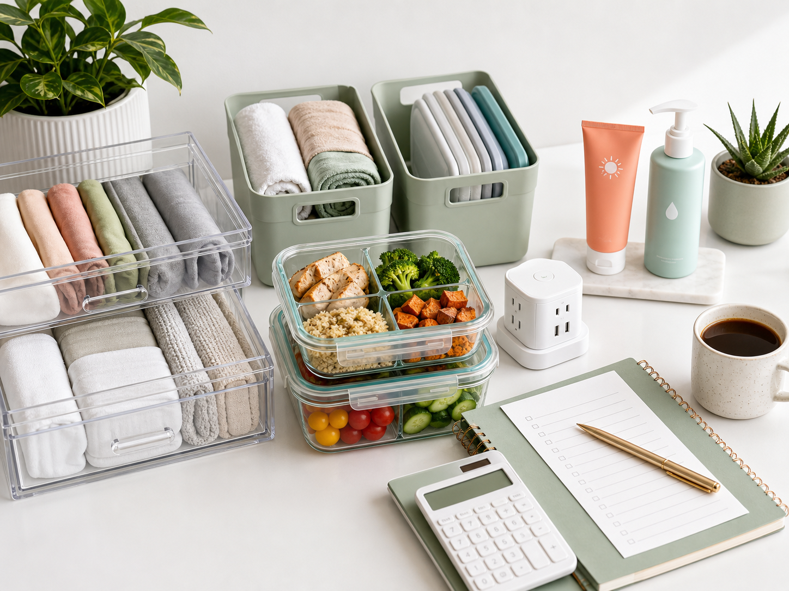

Desk tech buying filter
Start with power and cables. A good tech setup should reduce charging clutter, improve posture, or make daily work easier.
Read useful gadgets guide
Compare practical tech, smart home, kitchen, skincare, storage, and budget tools with clear filters, useful picks, and disclosed commercial links.
Technology should be a main category, not a side note. The strongest Pinterest angle is practical: charging, cables, desk setup, video calls, focus, storage, and useful accessories people can see in one image.
Start with power and cables. A good tech setup should reduce charging clutter, improve posture, or make daily work easier.
Read useful gadgets guideBest for phones, earbuds, watch, and desk clutter.
Best for laptops with too few ports.
Best for study desks, small offices, and night routines.
Smart home content gives the site a stronger technology lane. The buying promise is simple: automate one repeat task first, then expand only if the first device becomes part of the routine.
Pick one job: turn off a lamp, clean one floor, monitor one entry, or catch one leak. Then choose the simplest device.
| Product type | Best for | Check before buying |
|---|---|---|
| Smart plug | Lamps, fans, coffee routines | Outlet shape, app quality, scheduling |
| Robot vacuum | Pet hair, hard floors, daily dust | Mapping, bin size, replacement parts |
| Indoor camera | Entryways, pets, deliveries | Privacy controls, storage fees, placement |
This category adds broad product intent without leaving the Smart Living Tips brand. It works for Pinterest because the visuals are clear: charger kits, travel pouches, stands, power banks, trackers, and compact adapters.
Power, protection, and finding lost items come before decorative accessories.
Best for travel days, events, and older phones.
Best for recipes, calls, content, and desk use.
Best for keys, bags, wallets, and luggage.
Best for Pinterest traffic that wants an organized home, not a lecture. The buyer intent is visible: shelves, drawers, under-sink areas, entryways, and small apartments.
Use this before buying storage bins, labels, drawer dividers, or shelf organizers.
Open home reset checklist Read the full storage guideBest for kitchen drawers, makeup, cables, and office supplies.
Best for cleaning supplies, bathroom extras, and small shelves.
Best when multiple people use the same storage zone.
This is a stronger Pinterest fit than hosting because the visual promise is obvious: containers, lunch prep, air fryer meals, freezer backups, and grocery planning.
Match container size to meals first: snacks, lunches, freezer meals, or chopped ingredients.
Open meal prep checklistBest for repeat lunches, leftovers, and freezer backups.
Best for smoothies, sauces, and quick breakfast prep.
Best for baking, portioning, and repeatable recipes.
Beauty can monetize well on Pinterest, but only if the page avoids medical claims and recommends simple routine categories instead of pretending every product is a miracle.
Start with cleanser, moisturizer, and sunscreen before adding advanced products.
Read skincare guideBest for removing sunscreen, sweat, and daily buildup.
Best for making the routine repeatable morning and night.
Best for daily protection and simple beginner routines.
Money pins can earn through digital products, spreadsheet templates, finance books, and display ads. The page must avoid income guarantees and keep advice practical.
Start with fixed bills, flexible spending, sinking funds, and subscriptions.
Open budget checklistBest for readers who want formulas and weekly review.
Best for visual planning and low-tech money resets.
Best for finding recurring charges before they repeat.
This is not the main Pinterest money path. It stays available for side-hustle readers who already want a proof page, portfolio, or simple website.
Use the checklist first. Compare hosting only if the reader actually needs a site for the next test.
Open website launch checklistBest for a proof page, service offer, or simple portfolio.
Best when the free checklist has a clear follow-up offer.
Best for faster Pins, checklists, and product previews.